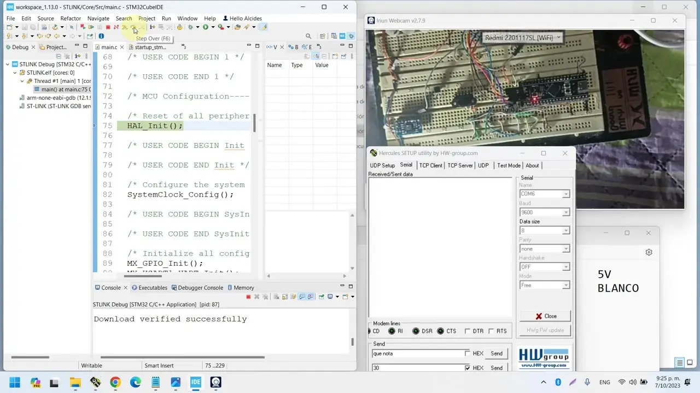

El cable trae 10 hilos. Este fue el orden de colores del que usé (revisa el tuyo):
- 3.3 V: rojo · DIO: negro · CLK: amarillo · GND: verde · SWO: azul
- RST: blanco · TX: naranja · RX: violeta · GND: café · 5 V: blanco
Los ST-Link V2 clon baratos programan, pero no siempre sirven para depurar con el programa original. Este programador mini de WeAct (versión STLink-STM32) se comporta como un ST-Link original: alimenta la tarjeta, programa, hace debug paso a paso en STM32CubeIDE y trae un puerto serial USB-UART (Virtual COM Port). Se muestra el cableado, la actualización de firmware y un programa que envía texto por serial mientras titila un LED.

El cable trae 10 hilos. Este fue el orden de colores del que usé (revisa el tuyo):
Conecta GND, SWDIO (DIO) y SWCLK (CLK) a la Black Pill. Puedes alimentarla con los 5 V o con los 3.3 V del programador: no necesitas el cable USB de la tarjeta.
Conecta el RX del programador al TX del micro (y TX a RX si vas a recibir). Al conectar el programador, Windows crea un puerto STMicroelectronics STLink Virtual COM Port: ya no hace falta un conversor USB-serial aparte.
En STM32CubeProgrammer conecta directamente: no hace falta activar Shared como con los clones comunes.
En Firmware upgrade aparece como STM32 Debug+VCP, es decir, debugger y puerto serial virtual. Actualízalo para que se comporte como un original.
Al programar, CubeIDE avisa que hay una versión nueva para el ST-Link y ofrece actualizarlo; acepta. Si no lo reconoce, en la configuración de debug elige ST-LINK y pulsa Scan.
Un programa sencillo envía un texto por la UART a 9600 baudios y alterna el LED:
while (1)
{
uartx_write_text(&huart1, "SUSCRIBETE AL CANAL\r\n");
HAL_GPIO_TogglePin(led_GPIO_Port, led_Pin);
HAL_Delay(500);
}Con Run se programa directo desde CubeIDE. Abre la terminal en el COM del programador: llegan los mensajes y el LED titila.
Con el botón de debug se puede correr el programa línea por línea (Step Over), ver cómo se enciende el LED y cómo sale cada mensaje por el serial.